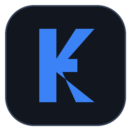
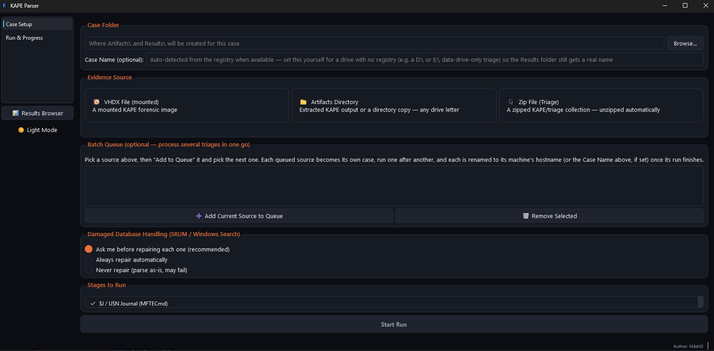
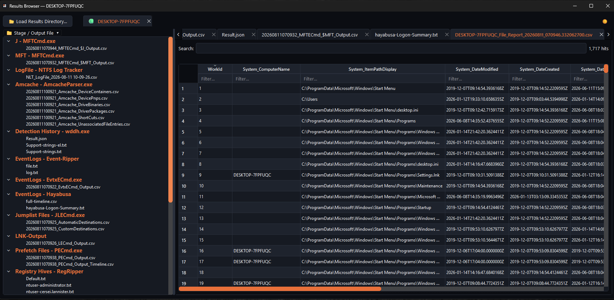

KapeParser
A Windows desktop application for parsing KAPE triage collections — pick a source, run the parsers, browse organized per-artifact output.
Overview
What it does
KapeParser replaces a legacy console script with a GUI workflow. Point it at a triage source — a mounted VHDX, a zip archive, or an already-extracted directory — choose which parsers to run, and get organized, searchable CSV and JSON output without leaving the tool.
The project is split into two executables sharing one distribution folder: KapeParser configures a case and runs the parsing pipeline with live per-stage progress; KapeResultsBrowser is a standalone companion for browsing parsed output from any past case, independent of the main tool.
Features
Mounted VHDX, zip archive, or extracted directory — detected from any drive letter, not just C.
Queue multiple sources; each is processed sequentially as its own case.
Named from the parsed registry's ComputerName, with a manual override when there is no registry to read.
Handles Windows' own "Compress to Zip" method, with a 7-Zip fallback and a tar fallback beyond that.
Ask, always, or never repair SRUM and Windows Search databases collected in a dirty-shutdown state.
Per-case tabs, JSON syntax highlighting, and a DuckDB-backed CSV viewer with filtering and highlighted search.
Screenshots


Requirements
- Windows 10 or later. Most stages read live registry hives, the MFT, or repair ESE databases — the compiled executable requests administrator elevation automatically.
- The third-party tools listed above, present under a
Tools\folder next to the application. Not included in the source-only download; each is under its own license. - Python 3.11 or later — only if running from source instead of the compiled executable.
Download
Full package
Includes the Tools\ folder — ready to run without a separate download step.
Download — Full PackageBuild from source
Both executables build from one spec into a shared distribution folder.
# from the app\ folder > .venv\Scripts\pip install -e ".[dev]" > .venv\Scripts\pyinstaller packaging\pyinstaller.spec # if rebuilding, clear both caches first > rmdir /s /q build > rmdir /s /q dist